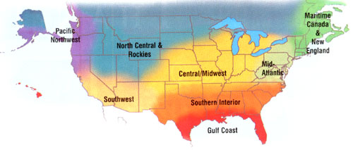
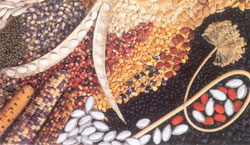
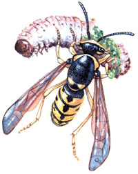

Once main the snows have receded and the ground is warming. Garlic and bunching onions lead the way with early, shoots-check for any that may be caught under the mulch. Fall-planted spinach, cilantro, kale, wild arugula and mâche love the warmth and the spring rain. Direct-seed additional greens and lettuce, and protect oriental greens and brassicas from flea beetles with row corers. Try a crop of fava beans. These big-seeded legumes thrive in the cold spring soil and will be ready to harvest and shell in July. For a real Mediterranean treat, sauté favas with a bit of olive oil and spring onion and garlic greens. Greenhouse shelves are brimming, but make room for cucurbit starts (squash, melons and gourds). In the orchard, remove mouse guards and check for damage. Finish pruning and top-dress fruit trees, shrubs and brambles with well-rotted manure or compost.
Time to transplant-get cut those trowels! We try to have the best portion of our brassicas in the ground (under row cover) by tax day, along with a brave few early tomatoes. Remove old kale. Mustard and turnip plants before harlequin bugs have a chance to reproduce, and plant successions of radishes, peas, lettuce. spinach, beets, carrots and Chinese greens. In late April, start summer squash, cucumbers and long-season gourds in newspaper pots (made by wrapping newspaper around a cup, sliding the cup Out and Finding the newspaper with paper tape). Hill soil around potatoes when they are ankle high. In May, plant summer greens. 'Rainbow' Swiss chard and 'Dandy' red orach produce colorful, long-lasting crops. Transplant main-season tomatoes. peppers and eggplants four days after the whippoorwill first sings and finish when oak leaves are quarter sire. Peppers and tomatoes thrive in hay/straw mulch-but not eggplants because the mulch encourages flea beetles.
Good things are beginning to happen in the garden. Take advantage of these pretty April days to start working on your garden spots to get ready for the summer bounty. Maybe you are having visions of salad-those early tomatoes, lettuces and radishes are ready for transplanting. After the last frost has passed, the heat-loving vegetables you started indoors (cucumbers, tomatoes peppers and squash) can be moved to their new homes. Use this time to get your plants established. A steady diet of water will help new shrubs and trees get those roots going. Sow annual flowers and vegetables-they will take off as the air begins to Warm Up. Don't forget to assess the success of your spring bulb planting. Make notes now, while it's still fresh in your mind, and keep those notes where you can find them at bulb-ordering time.
Some crops, such as Southern peas aril okra, demand warm temperatures before they will really take off. Now's the time to begin planting these. Its not too late to plant more bush beans, summer squash, melons, peppers, eggplants. marigolds, zinnias, gomphrena, rudbeckia, coleus and caladiums. If you've waited this long to plant tomatoes, consider choosing heat-tolerant cherry tomatoes or rapid-maturing varieties like `Early Girl.' Check crops such as green beans and tomatoes for spider mites. They are especially severe in years when we have a dry spring. If you catch mites early, keep them in check with a high-pressure water spray or a low-toxicity spray like wettable sulfur.
This is a critical time to spray fruit and nut trees. Many Cooperative Extension offices have organic or low-toxicity spray guides available. Pests like plum curculio and brown rot are relentless when it comes to stone fruits like plums and peaches.
This is a time of year when temperatures fluctuate widely. Still freezing? Tackle winter cleanup chores and repair garden tools. If we are having a cool spring, plant early crops like broad (fava) beans, peas, lettuce, onions and greens now. Planting early flowers will bring bees to your garden to pollinate the first vegetables-try direct seeding poppies, nigella, larkspur, cosmos and gypsophila. This is also a good time of year to divide perennial flowers to benefit their health. There is still plenty of time to start transplants indoors-they will catch up quickly as the days lengthen. Generally, there is a frost near the Victoria Day weekend (late May), so don't get carried away and plant tender things yet! To avoid carrot rust-fly problems, wait until June to seed carrots. We do this every year with success.
Survey your dominion and assess your solar assets. See where the snow melted first, where green emerged, where cold spots remain. Garden soil that slopes in a southern direction generally warms faster. Plant your early-season crops-arugula, kale, lettuce, pac choi, pea, radish and spinach-in these areas warmed by the sun and you will maximize your harvest in the shortest possible time.
As you plant, remember each seed is a living embryo. Treat it with respect. Most small, hard, round seeds will last for years if kept cool, dark and dry. Germination percentage for a packet of seeds may fall over the years. but think twice about throwing away your old stock and automatically ordering new seeds each year. You simply need to plant extra old seeds to compensate for lower germination rates.
Longer days and rising temperatures bring Northwest gardeners out of hibernation. In early April, jump-start the season by covering your beds with plastic. This will allow the soil to dry out and warm up quickly. Once the soil is dry enough to till, remove the plastic and work the beds. The brassicas (broccoli, cauliflower, cabbage, kale, etc.) along with salad greens, beets and carrots all can be planted outside a few weeks prior to the last frost. Wait until after this date for frost-sensitive plants. Take time this spring to make gardening a family activity. Plant a patch of wheat in the front yard to set off a six-month neighborhood bread-making project, or grow tall sunflowers to focus on the awesome ability of one seed. There's everything to do in April and May, but if we want our children to garden, sometimes we need to remember how to play in the dirt ourselves.
When nights are consistently above 50 degrees, it's time to plant out seedlings of eggplants, peppers and tomatoes. Direct-seed crops like beans, chard, collards, corn, cucumbers, kale, leeks, melons, muskmelons, mustard, okra, onions, parsley, pumpkins, squash, watermelon, sweet basil and other herbs.
Before you plant, consider how you will water. Some drip irrigation systems like T-tape are easier to lay out before you transplant, but the effort pays off because the water goes to the plant, not the weed. (See "Irrigation Made Easy," August/ September 2002.) A mulch of wheat straw also cuts down on weeding and helps conserve water as we recover from a multiyear drought.
Check catalogs for specialty vegetables traditional to Asian, Central American and South American Cuisines. These include varieties that thrive in our summer heat and can be directseeded now, including amaranth, Asian and Portuguese cabbages, huauzontli (a red-leaved Aztec spinach), jicama and edamame.
Our thanks to the following for their contributions to the Almanac: Roberta Bailey, FEDCO Seeds, Waterville, Maine; Cricket Rakita, Southern Exposure Seed Exchange, Mineral, Virginia; Connie Dam-Byl, William Dam Seeds, Dundas. Ontario; Matt Barthel, Seed Savers Exchange, Decorah, Iowa; Bill McDorman, Seeds Trust/High Altitude Gardens, Hailey, Idaho; Josh Kirschenbaum, Territorial Seed Company, Cottage Grove, Oregon; Rose Marie Nichols McGee, Nichols Garden Nursery, Albany, Oregon; Craig and Sue Dremann, Redwood City Seed Co., Redwood City. California; Dean Lollis, Park Seed Co., Greenwood, South Carolina; William D. Adams, Burton, Texas.
Most of us view yellow jackets as major pests. However, some of the species help us by feeding on aphids, caterpillars and other garden pests, while the rest play a beneficial role as nature's cleanup squad. We'd probably be neck-deep in dead meat without their help. Still, it is hard to be grateful to these critters when they are commandeering your forkful of grilled chicken or delivering a painful sting. And unlike honeybees, these yellow-and-black wasp relatives can sting repeatedly. That sting, plus their "meat and sweet" diet, can add a certain element of tension to fruit picking and fine dining in the out-of-doors.
Most people wait until numbers build up before putting out yellow jacket traps, but trapping in April and May is actually more effective in many areas. Although yellow jackets (Vespula species) are social insects like honeybees, they use their nests for only one season. All the workers and drones die off in the fall and responsibility for propagating the species is left to the newly hatched and fertilized queens. In late fall, the queens crawl into forest leaf-lit ter or some other protected site. Insulating leaves, snow and an ability to "super cool" protect the ladies from sub-zero temperatures all winter. Come spring, they emerge and start a new nest, often in a mouse or vole tunnel. Until the first batch of workers hatches, the queen must forage for all the food herself, and this two- to three-week period is when she is vulnerable to being trapped. Every queen killed now may eliminate several thousand yellow jackets later in the season. (The pa per wasps that nest under the eaves are not usually picnic pests, and are great caterpillar hunters, so unless the nest is near a doorway, it's best to leave them be.)
Weather during this spring period also may be a crucial factor in whether a particular season proves to be a "bad" yellow jacket year. A severe cold snap just after the protective layer of snow has melted could kill off many queens still in the ground, thereby reducing the number of prospective nests. A prolonged wet spell could hamper the queen's ability to set up a nest or forage, resulting in fewer bees per nest. On the other hand, a consistently dry, warm spring allows huge numbers of dormant queens to wake up comfortably and successfully go about their business.
Other natural factors also may be at work locally-one summer night we had a black bear carefully search and destroy at least eight nests in our one-acre orchard. Nothing was left the next morning but holes in the ground and a few forlorn bees. However, failing bears in the neighborhood, spring trapping may be a more dependable method of control.
Both homemade and commercial yellow jacket traps (available at most garden stores) can be effective. One expert suggests bologna and apple juice to attract the bees, and others swear by tuna-flavored cat food. Some commercial "attractants" claim to lure in the queens particularly well. The best bet is to experiment for several seasons to see what works most effectively in your particular area. Whatever you use, empty the traps and refresh the bait every few days. Yellow jackets dislike the smell of rotting meat, including rotting dead yellow jackets. Place the traps out of direct sunlight in an open area and away from where you plan to be active. Random insecticide spraying will do nothing to control numbers. However, a direct shot can kill a nest of yellow jackets, if necessary. Work very carefully at night when the yellow jackets are home-and have an escape route planned!
|
 TOM QUIRK |
 |
 |